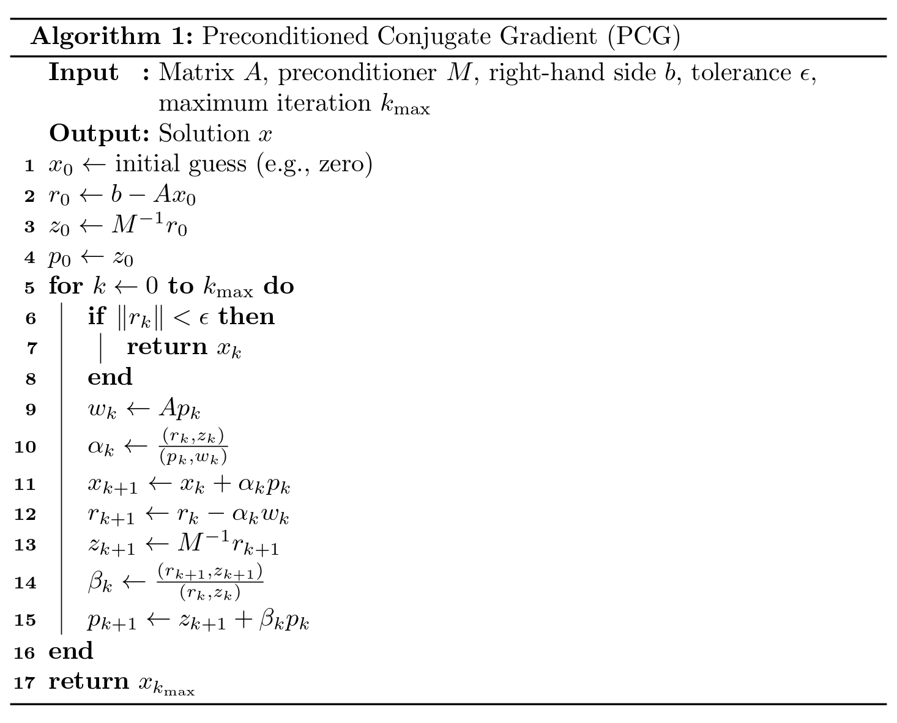
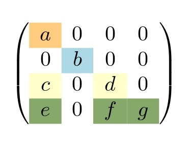

* Based on paper: "Sparsified Preconditioned Conjugate Gradient Solver on GPUs" by Da Ma, Khalid Ahmad, Kazem Cheshmi, Hari Sundar, and Mary Hall at SC'25

Efficient Solutions for Linear Systems
Solving a linear system, Ax=b, is a fundamental task in numerous applications where A is a square matrix, x is an unknown vector, and b is a known vector. This computation often consumes the majority of simulation time. Broadly, there are two general approaches to solving such systems: direct methods and iterative methods.
Direct methods decompose the problem into easier-to-solve linear systems, such as triangular systems. While accurate, these approaches typically demand significant memory to store the decomposed systems and can be computationally expensive due to their cubic complexity.
Iterative Methods and Preconditioning
Iterative methods begin with an initial guess and progressively refine the solution until a predefined accuracy is achieved. Each iteration of these solvers often performs a projection. Depending on the computations involved in each iteration, these methods offer a compromise between memory usage and computational cost. Some iterative methods primarily rely on matrix-vector multiplications, while others depend on more complex computations like triangular solvers. The latter category computes a triangular system as a preconditioner before the solve phase. This preconditioning accelerates convergence but incurs the cost of storing the triangular factor and introduces dependencies in its solution.
Addressing Preconditioner Bottlenecks
A simple Preconditioned Conjugate Gradient (PCG) pseudo-code is illustrated in Figure 1, where the triangular solver is applied as a preconditioner. The iterations of the preconditioner can be modeled as a computation-directed acyclic graph (DAG), where vertices represent iterations and edges signify dependencies between them. The preconditioner often becomes a bottleneck because the inherent dependencies between iterations limit the effective utilization of parallel resources, especially on GPUs. We use a simple matrix A, shown in Figure 2, to illustrate the impact of these dependencies on parallelism.

Figure 1: Preconditioned Conjugate Gradient (PCG) pseudo-code.

Figure 2: Sparsification effect on matrix structure and storage format.
One common approach to decomposing the input matrix into triangular systems is to use its lower and upper parts. Solving these two triangular systems provides an estimate for the solution of the linear system. To better exploit parallel resources, independent iterations of the triangular solver can run concurrently. An example of parallel iterations is shown in Figure 3. All vertices between two dotted lines form a wavefront, which comprises independent iterations that can run in parallel. While these iterations run in parallel within each wavefront, synchronization is required between wavefronts.
Figure 3: Wavefront parallelism and dependency reduction through sparsification.
Sparsified Conjugate Gradient (SPCG)
If we can eliminate certain non-zero entries (e.g., f), the number of wavefronts can be reduced, leading to increased parallelism. However, removing such entries might cause convergence issues, even as it enhances parallelism. If the value of f is sufficiently small, its removal will not significantly affect convergence while still improving parallel execution. This technique is known as sparsification, and the resulting Conjugate Gradient (CG) variant is referred to as Sparsified CG (SPCG).
SPCG applies a sparsification algorithm where small values are dropped if they reduce the number of wavefronts. An Incomplete LU factorization with zero fill-in (ILU0) preconditioner is then applied to the sparsified matrix. The resulting triangular systems after sparsification are smaller with fewer wavefronts, significantly improving the end-to-end performance of the linear solver by up to 4.66 times, with a geometric mean average of 1.23. Figure 4 illustrates the performance of SPCG across various applications. As shown, the speedup varies across different domains, but SPCG generally performs well, with only a few counter-example cases seeing limited benefits. Conversely, economic modeling, duplicate-optimization, and circuit-simulation workloads show some of the most dramatic speedups, consistently delivering large end-to-end gains.
For more detailed information about SPCG, please refer to SPCG paper, a collaborative work by Da Ma, Khalid, Kazem Cheshmi, Hari Sundar, and Mary Hall, researchers from McMaster University and the University of Utah.
Figure 4: SPCG-ILU(0) speedup over PCG across applications.